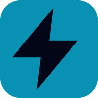

Component Library
Explore electrical and electronic components with symbols, pinouts, ratings, working principles, and common mistakes.

NIL SparkLabNIL SparkLab is a free educational virtual lab for electrical engineering and electronics students. Explore components, build circuits, simulate concepts, troubleshoot faults, and practice practical skills.
Explore electrical and electronic components with symbols, pinouts, ratings, working principles, and common mistakes.
Build and inspect educational low-voltage circuits with interactive connections and live simulation.
Study DOL and Star-Delta motor control concepts with guided practical workflows.
Practice troubleshooting, numerical thinking, viva-style questions, and revision quizzes.